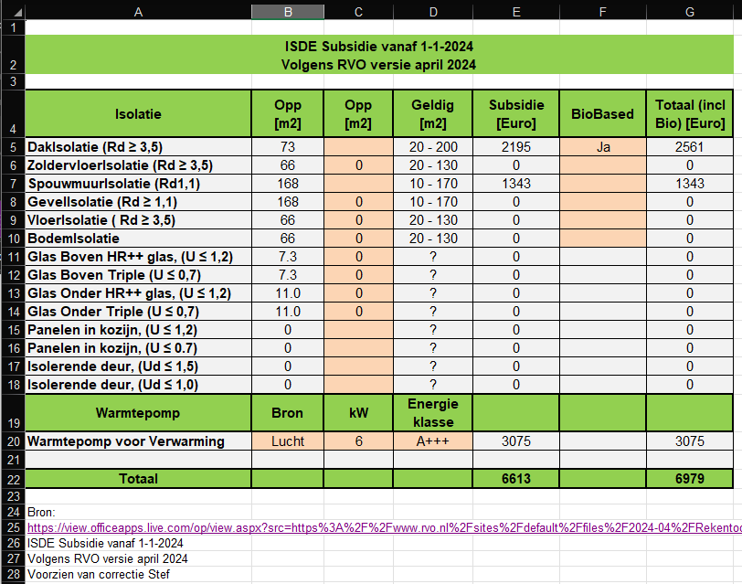

In het tabblad ISDE, worden van alle maatregelen de subsidies berekend.
Dit is nog experimenteel en helaas gebaseerd op 2024 en ja het is weer veranderd.
In de eerste kolom Opp staan de oppervlakten zoals berekend door het model. Bent u het daar niet mee eens, dan kunt u in de tweede kolom de juiste oppervlakte invullen. In onderstaand voorbeeld is dat voor een groot aantal maatregelen die niet worden uitgevoerd, dus oppervlakte op 0 gesteld.
Als je In de kolom Biobased "Ja" invult berekent het programma ook de extra toeslag.
In de berekening wordt rekening gehouden met verdubbeling van de subsidie aanvraag bij meer dan 1 maatregel.
